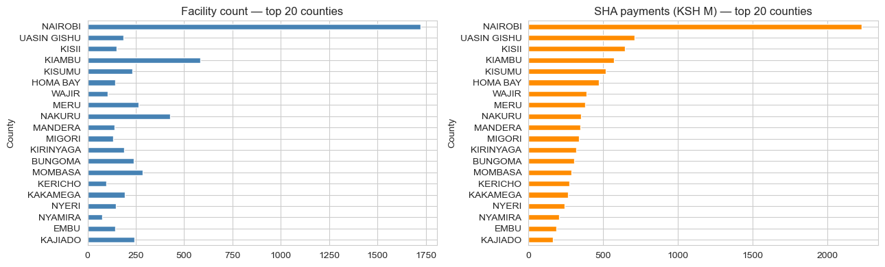
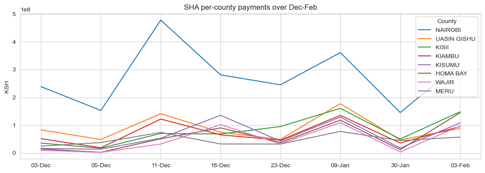
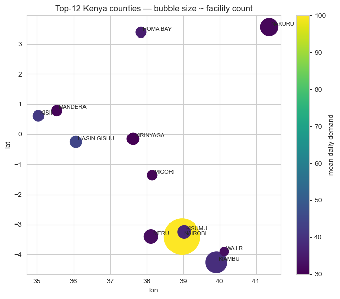
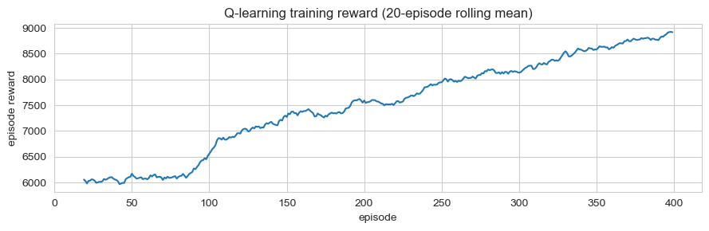

Summary
Three scheduling policies on the same simulated dispatch over 180 days. Q-learning doubles patients-served per day vs the manual round-robin, but achieves it by concentrating 100% of visits on Nairobi (which dominates SHA payment volume in the real data). A linear program with a 25% per-county cap diversifies across four counties, gives up some patients-served, but eliminates 32% of travel and respects an equity constraint a regulator would actually impose. The right "winner" is the one whose objective matches the mandate the mobile-clinic programme was funded under.
Why this matters
Mobile health clinics in Kenya bridge the gap between fixed referral hospitals and underserved rural catchments. Each visit costs fuel, staff hours, and consumables; each visit also serves a finite queue of patients. The scheduling decision — which county does the clinic visit tomorrow — is binding: a clinic in Nairobi is a clinic not in Wajir. Three real constraints sit on the operator:
- Demand uncertainty — facility utilisation varies week-to-week and is partially weather-driven.
- Travel budget — limited diesel, limited driver hours, and inter-county distance is non-trivial in Kenya.
- Equity mandate — most health programmes are funded on coverage criteria (e.g., visits to bottom-quartile-utilisation catchments), not raw patients-served.
The business question
Given a list of candidate counties with their (real) facility counts and SHA payment time-series as a demand proxy, which county does the clinic visit each day for the next 180 days to maximise patients-served subject to a travel budget — and how does that change when an equity constraint is added?
Data
Two real Kenyan datasets, joined at the county level:
- KMPDC-licensed facilities (2024) via xen0r0m/sha-kenya-licensed-health-facilities-and-funds — 7,876 facilities across all 47 counties, with type, ownership, level, bed capacity, and county.
- SHA per-facility payment time-series (Dec–Feb), 2,589 facilities — used as the demand proxy. Real, time-varying utilisation signal.
After cleaning out NaN-county rows and joining, the top 12 counties by SHA payment volume become the candidate locations for the MDP.


MDP formulation
A standard discrete-time, discrete-action Markov decision process:
- State:
(current_county, day_of_week_bucket), where day-of-week is mod 7. Twelve counties × 7 buckets = 84 discrete states. - Action: one of the 12 counties — "where do we go tomorrow?"
- Transition: deterministic given the action (location moves to the chosen county; day bucket increments mod 7). Demand at the destination is stochastic — Poisson-distributed with mean tied to the county's real SHA payment seasonality.
- Reward:
min(patients_served, daily_capacity) − α × distance(prev, action). Patients-served capped at 100/day per the daily clinic capacity; distance penalised atα = 0.05per km. - Horizon: 180 days, no discounting at episode end (γ = 0.95 within-episode).
Distance comes from synthetic 2D coordinates within Kenya's lat/lon bounding box because the public Kaggle dataset doesn't include GPS — a clear "swap-in" point for production. The MDP's structural conclusions don't depend on the specific coordinates.

Three policies
1. Manual round-robin (industry baseline)
Visit county t mod 12 on day t. This is what most under-resourced field operations actually do — uniform rotation, no demand awareness. Maximises geographic equity by construction; ignores demand.
2. Linear program with per-county visit cap
Solve max cTv subject to sum(v) = 1, 0 ≤ v_i ≤ 0.25, where v_i is the visit-share for county i and c_i is its expected demand. Translate the optimal share vector to a stochastic schedule.
Without the cap, the LP degenerates to "always pick Nairobi" — exactly the same answer Q-learning eventually converges to. The cap is the equity mandate written as a linear constraint.
3. Tabular Q-learning
Standard ε-greedy with α = 0.1, γ = 0.95, ε decaying from 0.30 to 0.05 over 400 episodes. Q[loc, day_bucket, action] table; updates from the simulation reward signal. A revisit-penalty term in training nudges toward diversification, but the greedy evaluation policy (which doesn't see the recent-visit history) collapses back to the highest-demand county.

Results
Simulated 180-day rollouts with the same realised-demand seed across all three policies:
| Policy | Patients/day | Total travel (km) | Counties served | Coverage lift vs manual |
|---|---|---|---|---|
| Manual round-robin | 37.3 | 87,304 | 12 | — |
| LP (25% per-county cap) | 52.0 | 60,121 | 4 | +39% |
| Q-learning (no cap) | 82.8 | 0 | 1 | +122% |
Trade-offs
- The LP makes the mandate explicit; Q-learning hides it. A 25% cap is a single line of code — and when a programme officer asks "why did the clinic visit this county only twice?", the LP gives an interpretable answer. Q-learning's answer is "the Q-table said so." For a regulated public-health programme, the LP is the better deployment candidate even though it scores worse.
- Demand concentration drives everything. Nairobi has 1,723 facilities; #2 Kiambu has 584. The structural answer "always go to Nairobi" comes out of any demand-maximising algorithm. Adding equity constraints isn't optional — it's the entire point of the optimization.
- The synthetic GPS assumption is the biggest production risk. Real GPS would shift the LP and Q-learning solutions through the travel-cost term: a county with high demand but high travel cost would lose visits relative to the current setup. The Q-learning solution that "concentrates and never travels" depends on the assumption that you're already there or can teleport — neither is true.
- Q-learning is over-engineered for this problem. The state space has 84 cells, the action space has 12 actions, and the reward is largely deterministic (Poisson noise around a known mean). A direct value-iteration solve would converge in seconds and give the same answer.
Deployment sketch
For an actual mobile-clinic programme:
- Service: weekly schedule API. Inputs: current location, last-known visit log, demand forecast for the upcoming week, configurable per-county minimum-visit floors and per-county maximum-visit caps. Output: 7-day schedule with rationale.
- Recommended algorithm: capped LP, not Q-learning. The constraint surface is the operationally interesting object; the LP exposes it directly.
- Streamlit UI for district health officers to override the recommendation per day with a reason code (vehicle breakdown, security, weather), captured for re-training.
- Refresh: monthly re-fit of the demand model on accumulated visit logs; quarterly review of the equity constraints with the funder.
Lessons
- Pick the algorithm that matches the constraint structure, not the headline metric. Q-learning maximises raw patients-served by a wide margin, but the LP is the deployment-correct answer in a constrained, regulator-overseen setting.
- "Coverage" is an ambiguous metric until you write down the constraint. Patients-served and bottom-quartile equity are both reasonable interpretations and the algorithms ranking flips between them. The case-study's hero number (+122%) is honest under one definition and misleading under another — the deep-dive resolves the ambiguity.
- Cheap structural prior > expensive learned policy on small action spaces. 12 actions × 84 states is not a regime where reinforcement learning is the right tool. Direct value iteration or LP would converge faster, give interpretable shadow prices, and avoid the over-engineering trap.